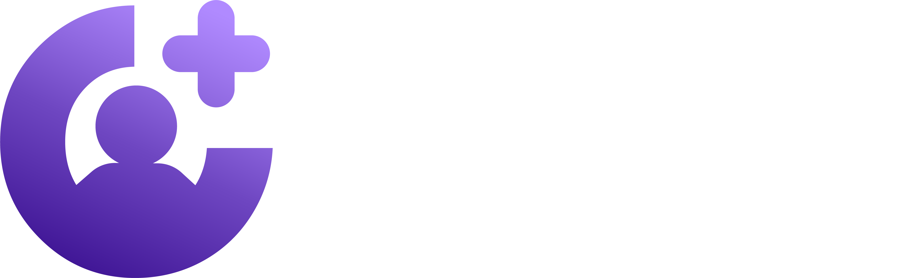

El sistema para atraer a tus pacientes ideales de forma predecible — sin depender de referidos, sin regalar tu trabajo y sin tener que convertirte en “influencer”.
Piénsalo como lo pensarías en el cuerpo humano: una arteria única, sin circulación colateral. Mientras fluye, todo bien. Pero el día que se tapa… no hay un plan B.
Así funciona una consulta que vive solo de referidos. Hoy te llegan pacientes porque un colega te recomendó, porque un paciente contento habló bien de ti, porque tuviste suerte. Es real, y es valioso. Pero no lo controlas tú.
No decides cuándo llegan. No decides cuántos llegan. No decides qué tipo de paciente llega. Simplemente esperas.
Y mientras esperas, pasa algo peor: eres excelente en lo que haces… y casi nadie lo sabe. Eres el mejor secreto de tu ciudad.
Si te suena familiar alguno de estos, esto es para ti:
Durante años vi lo mismo repetirse: médicos brillantes, con años de formación y resultados que otros ni sueñan, dependiendo de que “alguien los mande”. Especialistas capaces de cambiarle la vida a un paciente… invisibles para ese paciente que los necesitaba y ni sabía que existían.
Y entonces algo cambió mi forma de verlo por completo. Una crisis de salud cercana me mostró en carne propia lo que significa buscar al especialista correcto y no encontrarlo a tiempo. No era un problema de marketing. Era un problema de conexión: los buenos doctores y los pacientes que los necesitan no se estaban encontrando.
Ahí nació esto. No un truco para “hacerte viral”, sino un sistema para que dejes de depender del azar y construyas tu propia forma —predecible, digna y tuya— de que los pacientes correctos lleguen a ti.
Lo llamé Sin Referidos. Y no es teoría: es lo que aplicamos todos los días con doctores reales.
No se trata de tener “más seguidores”. Se trata de tener más pacientes correctos — y de que tu consulta deje de depender de la suerte.
Antes de atraer a nadie, defines a quién quieres en tu sala de espera. El paciente que valora, que paga sin regatear y que vuelve. Cuando sabes a quién le hablas, todo lo demás se vuelve fácil.
Dejas de “ofrecer una consulta” y empiezas a ofrecer una solución que tu paciente ideal siente que no puede rechazar. Misma capacidad médica, presentada de una forma que conecta y convierte.
El sistema que hace el trabajo por ti: atrae al correcto, descarta al que no encaja y llena tu agenda con calidad, no con ruido. Esto es lo que te independiza del referido.
Vas a entender de raíz la “arteria única” y por qué tu consulta se siente impredecible. Primer cambio de mentalidad: de esperar a decidir.
Defines con precisión a quién quieres atraer. Deja de hablarle a “todos” (que es hablarle a nadie) y empieza a atraer al paciente que sí valora tu trabajo.
Aprendes a empaquetar y comunicar lo que haces para que tu paciente ideal quiera agendar contigo. Sin rebajarte, sin regalar tu tiempo.
Montas el sistema que atrae y filtra por ti. Aquí es donde dejas de depender de referidos y empiezas a tener flujo propio.
Pasas de la teoría a la acción. Terminas el curso con tu sistema funcionando y un plan claro de qué hacer esta semana.
Todo directo al grano, sin relleno. Diseñado para un médico ocupado que quiere resultados, no una maestría en marketing.
En 6 meses pasó de prácticamente cero presencia a más de 10 millones de alcance y 30.000+ seguidores — y, lo que importa de verdad, a pacientes internacionales llegando a su consulta. No por suerte. Por sistema.
“Me ayudaron a multiplicar por cinco mis cirugías en un solo mes.”
“Me ayudaron a facturar la suma que siempre quise desde que abrí mi clínica: $100.000 al mes.”
“Por fin pude escalar mi consultorio: ahora tengo pacientes de otras ciudades y logré abrir mi propia clínica.”
Al entrar hoy a Sin Referidos, te llevas:
Garantía de 7 días — 100% de tu dinero de vuelta. Entra, mira el primer módulo, aplícalo. Si sientes que esto no es para ti, escríbenos y te devolvemos cada centavo. El riesgo lo asumo yo, no tú.
Cada mes que pasa dependiendo de referidos es un mes en el que tu consulta la decide la suerte. Los pacientes que necesitan exactamente lo que tú haces están ahí afuera, ahora mismo, buscando. La única pregunta es si te van a encontrar a ti o a otro.
Deja de ser el mejor secreto de tu ciudad.
Acceso inmediato · Pago único de $39 · Garantía de 7 días (100%)
00: 00: 00